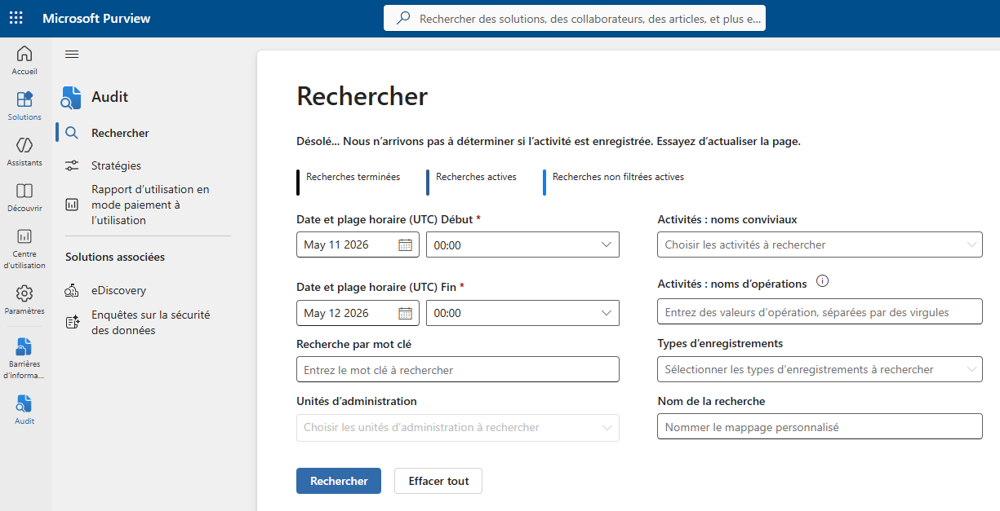

Tutorial – Microsoft 365 Security
This check verifies that Microsoft 365 audit logging is enabled.
Missing audit logs can impact:
Open the Microsoft Purview portal and navigate to:
Microsoft Purview → Solutions → Audit
https://purview.microsoft.com/audit
Verify that:
